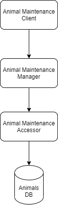
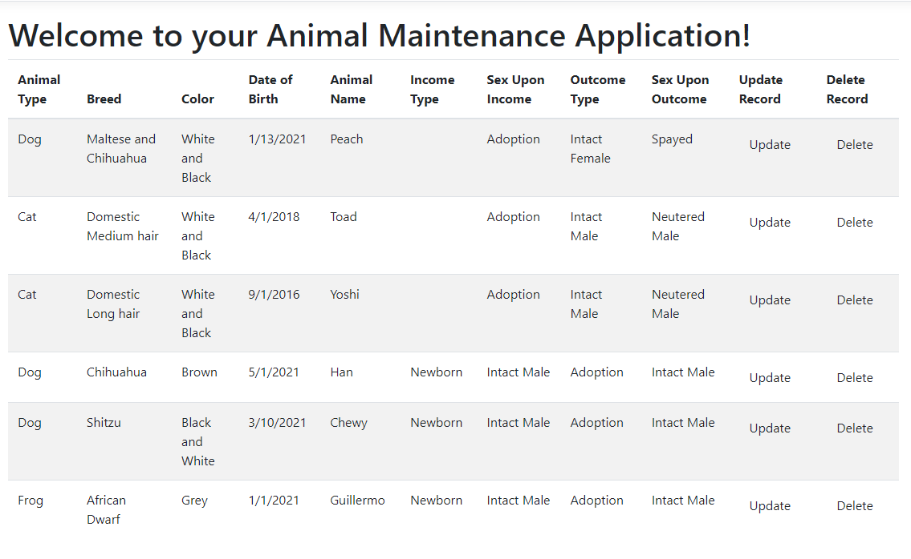
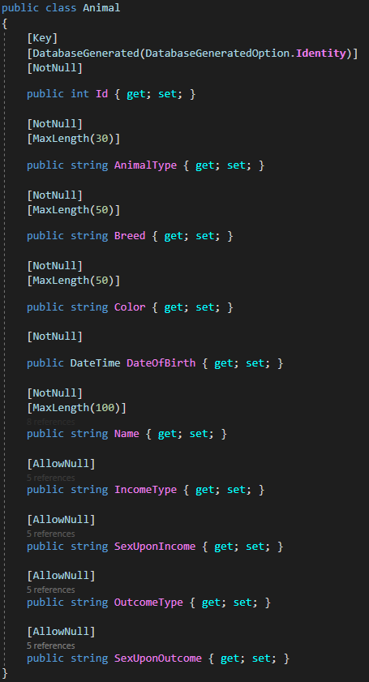
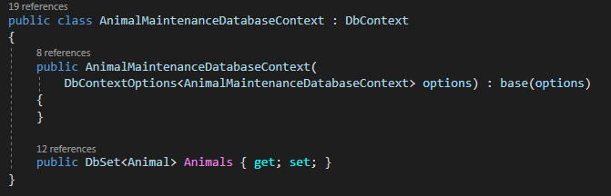
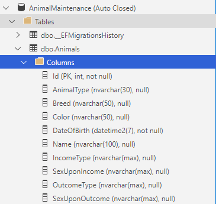

Hello! Thank you for visiting my Computer Science Capstone porfolio! The below contents will describe the work I've completed to re-engineer an existing application developed at Southern New Hampshire Univeristy as part of our course curriculum. It will be split into the following categories:
- Professional Self-Assessment
- Performing a Code Review
- Narrative One: Software Design/Engineering
- Narrative Two: Data Structures and Algorithms
- Narrative Three: Databases
Professional Self-Assessment
Throughout my studies at Southern New Hampshire University, I've increased my overal knowledge of Computer Science in a few different categories. I've expanded on my language knowledgeset to include C, C++, and Python, as well as how to reverse engineer a compiled executable using gdb with exposure to reading Assembly language. I've also increased my knowledge in working with user interfaces and Python notebooks to create a testing script, and I've also increase my skills in overal application design and planning. A key tip to any Software Engineer is to know how to prioritize and be thoughtful with the final deliverable, making sure it emcompasses what a consumer needs in terms of requirements, and that enough engineering has been implemented to ensure a safe and secure application. The skills I've learned with my time at SNHU have helped me become a more thoughtful and conscious engineer in my current career as a Software Engineer. I've been able to successfuly work with product owners to gather requirements, provide estimates and work on applications iteratively using the planning and organization skills we were taught as part of our curriculum.
Below this self-assessment lies the narratives of the final projet I've chosen to work on. The overal project is a complete re-engineering effort of an existing CRUD application, originally written as an isolalated Python module. Per the guidelines, I've opted to tranlsate this script into a full-stack C# application using .Net Core 3.1 and EntityFrameworkCore 5.0.9 to handle the work. The first item will be a screen recording of my performing a code review. This covers my analytical perspective of the original applicaiton, as well as covering the intended enhancements I will make per the final project. After the Code Review, I will then go into further details on the three separate narratives that accumulate the final project. As mentioned previously, they include Software Designer/Engineering, Data Structures and Algorithms, and lastly Databases. These narratives will go into detail on the actions I've taken, as well as include links to the actual GitHub artifacts that I have uploaded to this repository.
Performing a Code Review
In Milestone Two for CS-499, we performed a code review that covers the artifact details we plan to revist for the final project. Below is a video that captures me performing a code review
over my plans to incorperate Software Design/Engineering, Data Structures and Algorithms, and Databases into a cohesive final project.
Narrative One: Software Design/Engineering Artifact
The original project I've decieded to re-engineer is a Python script that facilitates CRUD operations on a MongoDB database named 'Animals'.
For my final project, I've opted to re-write this entire application and port it to a C# application written in .Net Core 3.1. Below is a overview of how the call chain now occurs within the applicaiton.

As part of the re-engineering process, I've introducted a structure that will abstract the data layer away from the client layer. To do this, I've introduced three new projects within the solution. They are as follows
- Animal Maintenance Client: Responsible for front end displays, injecting references, and application startup.
- Animal Maintenance Mangager: Responsible for directing workflow of application
- Animal Maintenance Accessor: Responsible for calling data source and facilitating database creation using Entity Framework
General Updates for the Software Design/Engineering Narrative
The intent of this narrative is to utilize the skills I've learned thus far as a Software Engineer and apply them to re-engineer an existing application. Some key points I'd like to address that I've accomplished as part of the project include the following
- Creating more specifically named varaibles
- Covering the application with an appropriate level of Unit Test coverage
- Implement constructor based Dependency Injection to isolate code and remove hard dependencies
- Translate entire application into a C# driven app.
A link to the application as checked into GitHub source control can be seen Here.
Narrative Two: Data Structures and Algorithms
For the second narrative in our final project, we will cover my changes made to the CS-340 Client/Server Development Animal Maintenance application and how I've introduced a data strucure that previously was not there. For the original project, we used a MongoDB database connection and populated an 'Animals' collection using a provided Excel sheet per the class materials. This provided us with essentially no flexibility in terms of how we managed or manipulated the data.
Animal Data Structure
The Animal Data Transfer Object I will be referring to can be viewed here
I've defined the animal strucutre for my application as follows:
- Id: Primary Key. Also used to easily update an existing entity, or delete an existing entity.
- Animal Type: Used as a means to identify the animal (Dog, Cat, etc.)
- Breed: Used to specify further information on the animal being maintained.
- Color: Basic color of the animal
- Date of Birth: Estimated Date of Birth of the animal being maintained
- Income Type: Not Required, used as a means to keep track of how the animal was obtained.
- Sex Upon Income: Not Required, used as a means to keep track of what sex the animal originally came in as.
- Outcome Type: Not Required, used as a means to keep track of the outcome of the animal (Adoption, etc).
- Sex Upon Outcome: Not Required, used as a means to keep track of the outgoing sex of the animal.
Each property on the Animal Data Structure contains a display attribute which is used for the user interface. An example of what the animal user interface looks like can be seen below:

Algorithms
The algorithms within this application are nothing revolutionary. They are merely an attempt at re-engineering the existing behavior from the original Python script into a .Net Core 3.1 application. Most of the work revolves around basic Create Read Update and Delete functions which live in the Accessor layer of the application. Here is a link to the Accessor class which is responsible for the main functionality of the application - AnimalMaintenanceAccessor.cs
The methods within this class are as follow:
- GetAnimals: Responsible for returning a list of all present animals within the AnimalMaintenance database.
- GetAnimal: Responsible for returning a single animal from the AnimalMaintenance database with the corresponding Id.
- AddAnimal: Responsible for adding a new animal record into the AnimalMaintenance database.
- UpdateAnimal: Responsible for updating an existing animal record in the Animal Maintenance database.
- DeleteAnimal: Responsible for removing an existing animal record in the Animal Maintenance database.
One of the standards I've learned within my time at Southern New Hampshire University is the importance of comments within code. Comments act as a quick way for others to understand what a certain function is doing. Although the functions I've introduced here are fairly self-explanatory through naming conventions, I have added method level comments on what these functions do onto the interface that AnimalMaintenanceAccessor.cs inherits from. The reasoning on doing this instead of the actual class itself is that adding the method comments on the interface level allow the comments to appear when implementing it in the code. The interface for AnimalMaintenanceAccessor.cs can be seen here.
Narrative Three: Databases
For narrative three which covers the updates related to databases for our final project, I've continued my effort to re-engineer the CS-340 Client/Server Development application into a .Net Core 3.1 app. This narrative contains what I believe to be the largest chunk of work from the original structure of CS-340's AnimalMaintenance Python script.
Entity Framework Core
Animal Maintenance makes use of Entity Framework Core to handle transactions to the AnimalMaintenance database. The entire database has been created and maintained using Entity Framework's Code First approach. This approach allows a developer to create the objects referred to as 'Entities' first, creating any constraints necessary upfront using data annotations (NotNull, Length, etc.). The Animal Entity with its respective data annotations to describe contraints can bee seen here.

The source code for this can also be viewed from within GitHub here - Animal Entity.
More information on working with Entity Framework Core can be found from Microsoft documentation here Working with Entity Framework Core
Setting up a new Database instance
This section will briefly cover the steps I took to create this AnimalMaintenance database structure. First, I installed the necessary NuGet packages to work with EntityFrameworkCore to the Accessors layer of the application. The NuGets I have installed are as follows:
- Microsoft.EntityFrameworkCore - Version 5.0.9
- Microsoft.EntityFrameworkCore.Relational - Version 5.0.9
- Microsoft.EntityFrameworkCore.SqlServer - Version 5.0.9
- Microsoft.EntityFrameworkCore.Tools - Version 5.0.9
I created an Entity class with the necessary data annotations seen in the Entity screenshot above. I then created a class that extends off of EntityFrameworkCore's DbContext class. This context class should specify any database tables as DbSet so that EntityFrameworkCore will know to create database tables for these DbSets. A screenshot of the AnimalMaintenanceDbContext can be seen here 
Here is a link to the actual class as hosted in GitHub - AnimalMaintenanceDbContext.cs
After creating these classes, I then needed to setup the Dependency Injection for this database context. I was able to do this by adding the Microsoft.EntityFrameworkCore Nuget into the Client Layer, and used the following code to inject the db context with a connection string that can be found in the appsettings.json file.
services
.AddDbContext(
options =>
options.UseSqlServer(
configuration.GetConnectionString("AnimalMaintenanceConnectionString")));
With everything in place, I was now able to use the Package Manager Console with the console's startup project set to the Accessor project and run the following command:
Add-Migration InitialCreate
After executing this, EntityFrameworkCore automatically generates a script which it will use to scaffold out the necessary items for creating the DbSet with any constraints defined. The InitialCreate migration can be viewed here - Initial Create Migration
After executing Add-Migration, all that remains is to run update-database to allow Entity Framework to propogate these changes onto the acutal database.
It is important to note though that originally I did not capture the constraints seen in the Entity class. This is the beauty of working with EntityFrameworkCore as all I needed to do was to add the data annotations, the repeat the process to create a new migration. After a successful build, I was able to update the changes we now see.
Azure Data Studio
The connection string when working with this application is set to connect to a users Local DB using the collowing source MSSQL/LocalDb. To verify that the database was created correctly, I downloaded Azure Data Studio which is a lightweight tool built off the same foundation as Visual Studio Code. One could setup using SQL Server Management Studio as well, but I like Azure Data Studio because it is quick and lightweight. More information on Azure Data Studio can be seen here - What is Azure Data Studio?
After logging in using the LocalDb credentials, I was able to view the Animals database structure with the same constrains I've identified in the Entity class shown above. Here is a screenshot of the Animal DB in Azure Data Studio: 